Chevrolet VS Ford
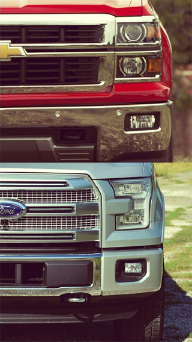
Соперничество между Chevrolet и Ford — одно из самых старых и легендарных в автомобильной истории. Эти две американские компании десятилетиями борются за лидерство в массовом сегменте, пикапах, спорткарах и автоспорте.
Начало войны (1910–1930)
Ford начал раньше – Модель T (1908) революционизировала индустрию, став первым массовым автомобилем. Chevrolet, основанный в 1911 году, сразу начал бросать вызов Ford.
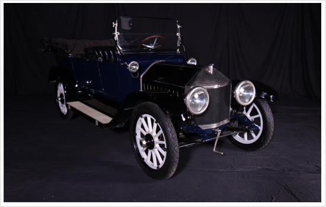
- Chevrolet Series C Classic Six (1913) – первая модель бренда.
- Chevrolet 490 (1915) – прямой конкурент Ford Model T, дешевый и доступный.
- Chevrolet стал частью General Motors (1918), что дало ему мощную поддержку.
В 1920-е Chevrolet представил более современные автомобили, но Ford оставался лидером благодаря конвейерному производству.
Массовый рынок и пикапы (1940–1960)
В этот период компании начали войну в сегменте семейных автомобилей и пикапов.
- Chevrolet Bel Air (1950) – стильный седан, конкурирующий с Ford Fairlane.
- Ford F-Series (1948) – первый пикап Ford, позже ставший легендой.
- Chevrolet C/K (1960) ответ Ford, один из самых популярных пикапов в истории.
Именно в это время родилось главное противостояние – Chevrolet Corvette vs Ford Thunderbird.
- Chevrolet Corvette (1953) – первый американский спорткар.
- Ford Thunderbird (1955) – попытка Ford создать конкурента, но он оказался больше роскошным, чем спортивным.
Мускул-кары и автоспорт (1960–1980)
1960-е годы стали золотой эрой маслкаров, когда Ford и Chevrolet активно конкурировали за покупателей мощных и доступных автомобилей.
 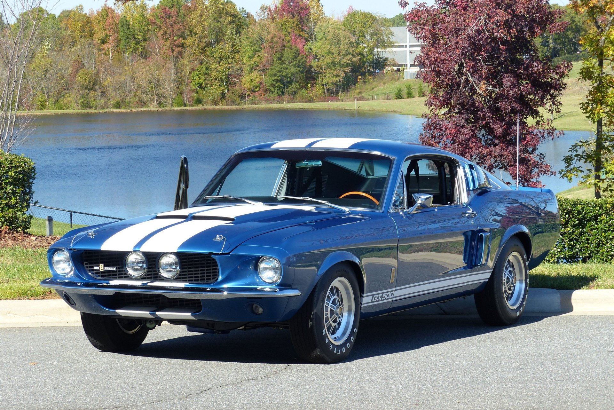
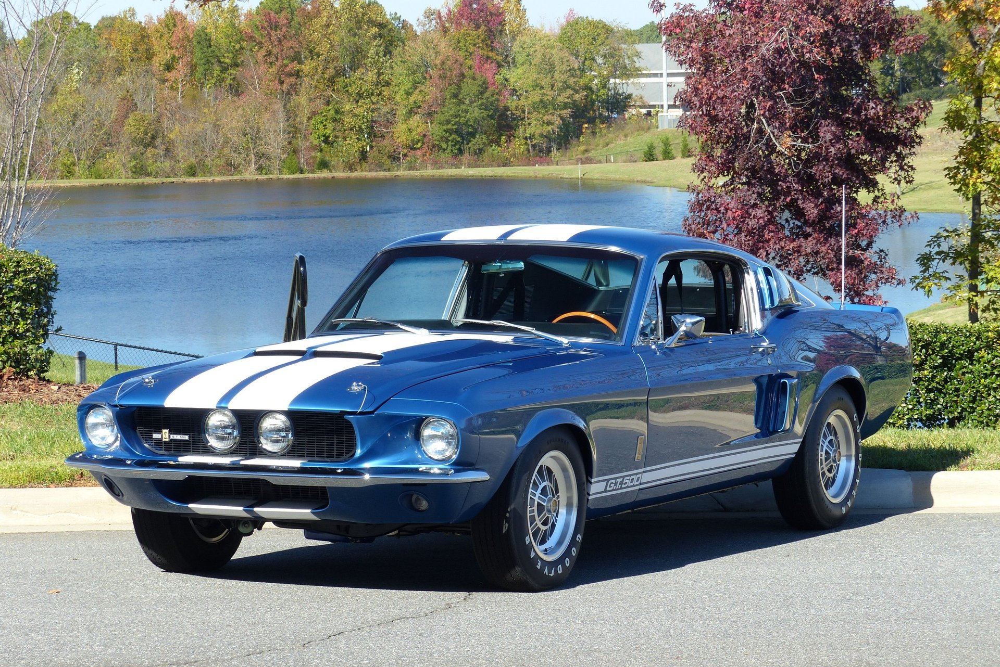
Pony Car War: Mustang vs Camaro
- В 1964 году Ford выпустил Mustang, который создал новый класс автомобилей — pony cars. Машина имела спортивный дизайн, мощные моторы и доступную цену. Она быстро стала хитом, особенно после появления версии Shelby GT350 (1965) с 306-сильным V8.
- Chevrolet не мог оставить это без ответа и в 1966 году представил Camaro, который сразу же вступил в борьбу с Mustang.
- В 1967 году началась настоящая война:
- Ford Mustang GT500 (1967) – 7,0-литровый V8 на 355 л.с.
- Chevrolet Camaro Z/28 (1967) – версия для гонок Trans-Am с 5,0-литровым V8.
В 1969 году Mustang получил Boss 429 с 375 л.с., а Camaro – SS 396 с 375 л.с., и война вышла на новый уровень.
Маслкары: Чей V8 мощнее?
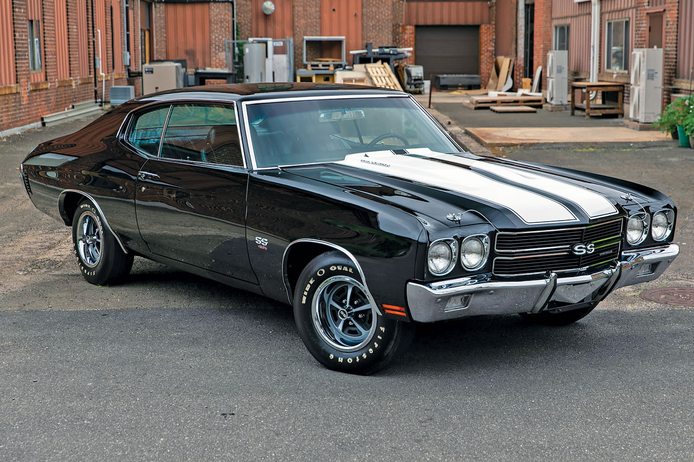 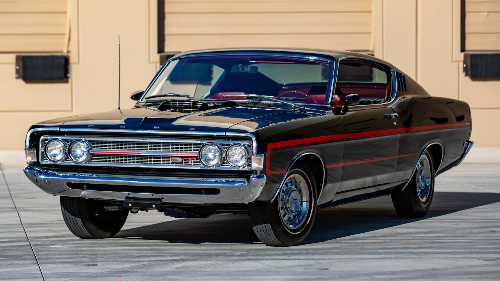Помимо Mustang и Camaro, обе компании выпускали классические маслкары:
- Chevrolet Chevelle SS 454 (1970) – 7,4-литровый V8 на 450 л.с., один из самых мощных маслкаров своего времени.
- Ford Torino Cobra (1969) – ответ Ford, оснащенный 7,0-литровым 429 Super Cobra Jet.
Но уже в 1973 году начался нефтяной кризис, и новые экологические нормы заставили компании снижать мощность.
Автоспорт: Битва на трассах
Ford и Chevrolet активно соперничали в гонках.
-
NASCAR:
- Ford доминировал в 1960-х с моделями Galaxie 500 и Torino Talladega.
- Chevrolet ответил в 1970-х с Monte Carlo и Chevelle, которые выиграли множество титулов.
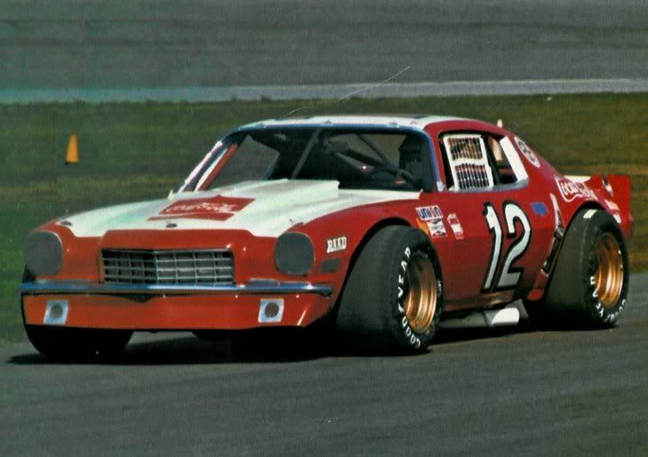
-
Trans-Am:
- В этой серии Mustang и Camaro сражались особенно жестко.
- Camaro Z/28 1969 года выиграл чемпионат, а Ford Mustang Boss 302 взял титул в 1970 году.
-
Ле-Ман и гонки на выносливость:
- Ford создал GT40, чтобы победить Ferrari в Ле-Мане. С 1966 по 1969 год Ford выигрывал 24 часа Ле-Мана, навсегда вписав свое имя в историю гонок.
- Chevrolet не участвовал в Ле-Мане напрямую, но Corvette стал культовым гоночным автомобилем в американских сериях.

К 1980-м маслкары почти исчезли из-за новых норм, но соперничество Ford и Chevrolet не прекратилось – оно просто перешло в другие сегменты.
Эра пикапов и технологий (1990–2010)
В этот период Ford и Chevrolet сделали ставку на пикапы и внедорожники, так как спрос на маслкары снизился.
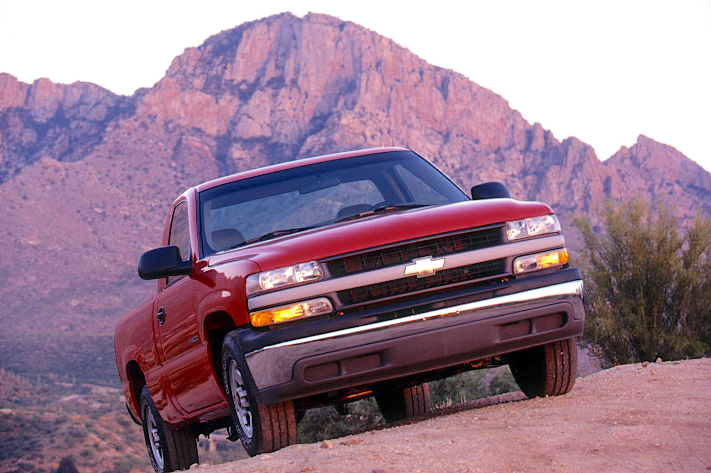 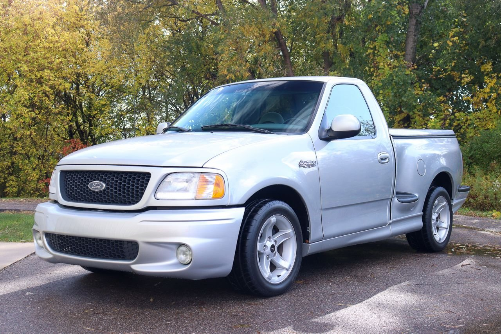
- Ford F-150 сохранял лидерство, но Chevrolet Silverado (1999) стал его серьезным конкурентом благодаря мощным V8 и улучшенной подвеске.
- В 2000-х появились спортивные версии: Ford выпустил F-150 SVT Lightning (380 л.с.), Chevrolet ответил Silverado SS.
- В 2009 году Ford представил F-150 Raptor, задав новый стандарт для внедорожных пикапов. Chevrolet выпустил свой Colorado ZR2 только в 2017 году.
Маслкары вернулись в 2005–2009 годах: Mustang Shelby GT500 (500+ л.с.) vs Camaro ZL1 (650 л.с.). Также шла борьба за рынок внедорожников: Explorer vs Tahoe, Expedition vs Suburban. С начала 2010-х Ford и Chevrolet начали внедрять турбированные V6, гибридные системы и новые технологии.
Современное противостояние (2020)
Сегодня конкуренция идет сразу на нескольких фронтах: электромобили, пикапы, спорткары и автоспорт.
-
Электрические пикапы:
- Ford F-150 Lightning (2022) – 580 л.с., запас хода 480 км.
- Chevrolet Silverado EV (2024) – 660 л.с., запас хода 640 км.
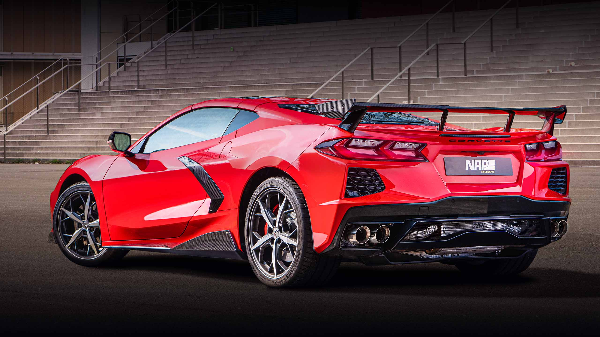
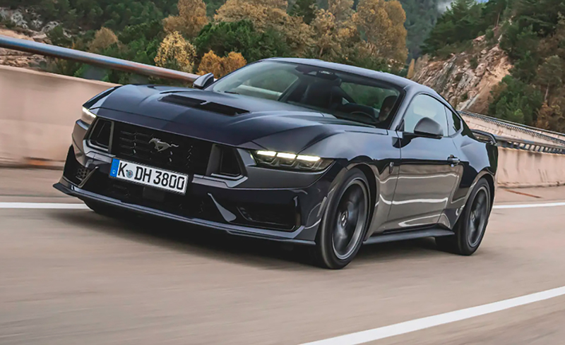
-
Маслкары и спорткары:
- Mustang Dark Horse (2024) – 500 л.с., заточен под трек.
- Chevrolet Corvette Z06 (2023) – 670 л.с., конкурент Ferrari и Porsche.
- Camaro vs Mustang в NASCAR – Chevrolet и Ford продолжают борьбу на гоночных трассах.
-
Автоспорт:
- Ford доминирует в ралли и «Дакаре».
- Chevrolet – лидер в NASCAR.
Ford сильнее в пикапах и внедорожниках, Chevrolet делает ставку на Corvette и электромобили. Битва продолжается.
Вывод
- Ford – лидер в пикапах, маслкарах и автоспорте.
- Chevrolet – эксперт в маслкарах, пикапах, суперкарах (Corvette) и гражданских авто.
Соперничество продолжается, и каждый новый модельный год приносит новые поводы для баталий.